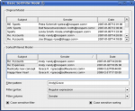

Item Views Examples

Item views are widgets that typically display data sets. Qt 4's model/view framework lets you handle large data sets by separating the underlying data from the way it is represented to the user, and provides support for customized rendering through the use of delegates.
- Address Book*
- Basic Sort/Filter Model
- Chart
- Color Editor Factory*
- Combo Widget Mapper*
- Custom Sort/Filter Model*
- Dir View
- Editable Tree Model*
- Fetch More*
- Frozen Column*
- Interview
- Pixelator*
- Puzzle
- Simple DOM Model*
- Simple Tree Model*
- Simple Widget Mapper*
- Spin Box Delegate*
- Spreadsheet
- Star Delegate*
Examples marked with an asterisk (*) are fully documented.